机器学习 by 李宏毅(3)
Convolutional Neural Network
常用于图像领域
Image Classification
All the images to be classified have the same size
One-hot encoding, Dimension 对于识别的种类
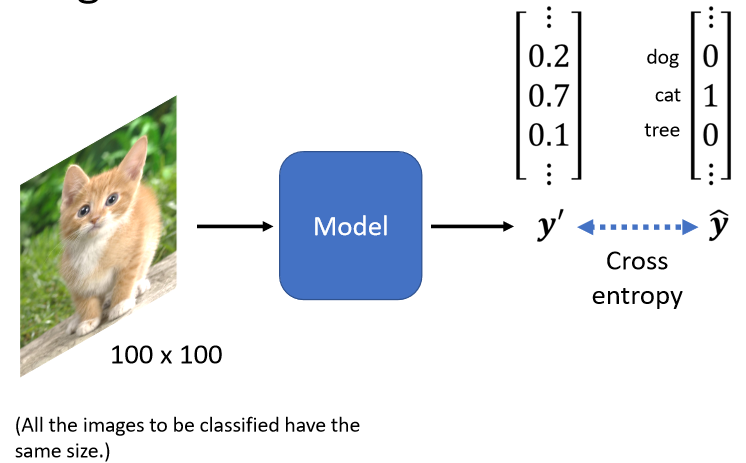
对于一个 Machine 来说,一张图片其实是一个三维的 Tensor，一维代表图片的宽,另外一维代表图片的高,还有一维代表图片的 Channel
把这一个三维的 Tensor 展平, 就可以输入到一个 Network
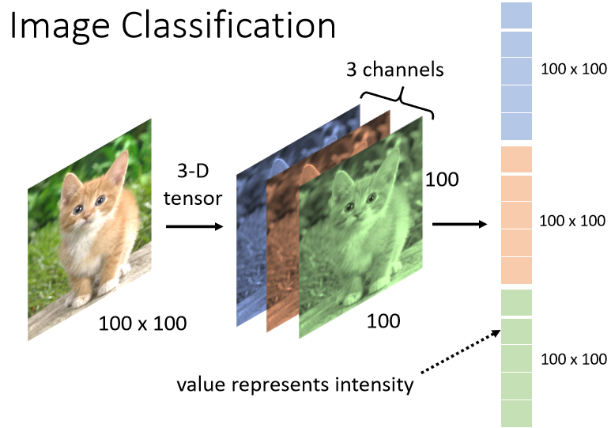
每一个 Neuron 跟输入的向量的每一个数值都有一个 Weight, 所以如果输入的向量长度是 100 × 100×3, 有 1000 个 Neuron,那第一层的 Weight,就有 1000×100 × 100×3,也就是 3×10 的 7 次方
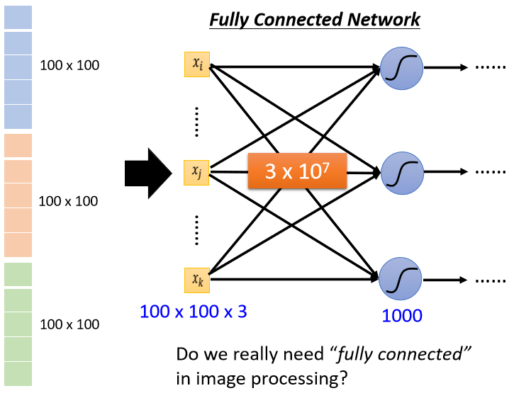
Simplification1 on Full Connected
设定一个区域 Receptive Field,每一个 Neuron 都只关心自己的 Receptive Field，如图所示Receptive Field 里面有 3×3×3 个pixel
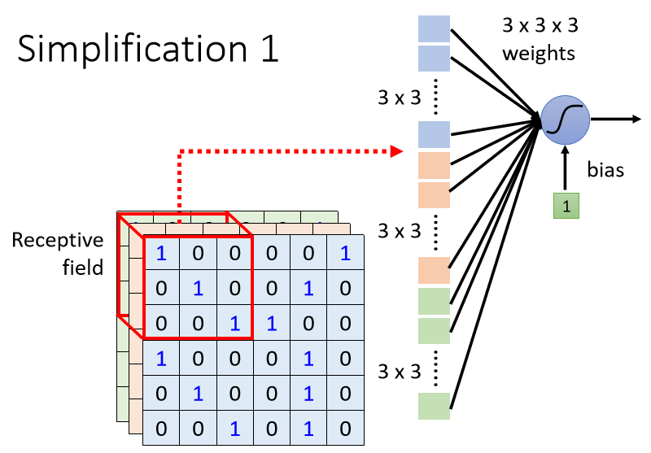
- 把这 3×3×3 的数值Flatten, 变成一个长度是 3×3×3 的 27 维的向量,再输入到neuron中
- Neuron 会给 27 维的向量的,每一个 Dimension 一个 Weight, 所以这个 Neuron 有 3×3×3 27个 Weight,
- 再加上 Bias 得到的输出,这个输出再送给下一层的 Neuron 当作输入
Typical Setting
- 考虑所有的channel
一般在做影像识别的时候会看全部的 Channel，我们在描述一个 Receptive Field 的时候,**只讲它的高跟宽*, 不用讲它的深度,反正深度一定是考虑全部的 Channel,而这个高跟宽合起来叫做 Kernel Size
一般同一个 Receptive Field,不会只有一个 Neuron 去考虑它,往往会有一组 Neuron
- Stride
把你在最左上角的这个 Receptive Field,往右移一点,然后製造一个另外一个 Receptive Field,这个移动的量叫做 Stride。Receptive Field 高度重叠从而获取所有的 Pattern
- Padding
超出范围你就做 Padding,Padding 就是补数值
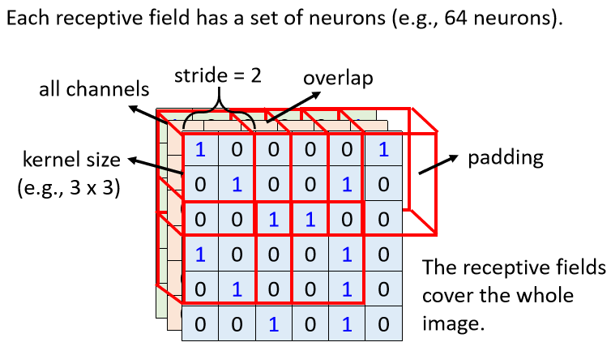
Simplification2
同样的 Pattern,它可能会出现在不同的Receptive Field，所以不同 Receptive Field 的 Neuron共享参数,也就是 Parameter Sharing权值共享，两个 Neuron 它们的 weights完全是一样
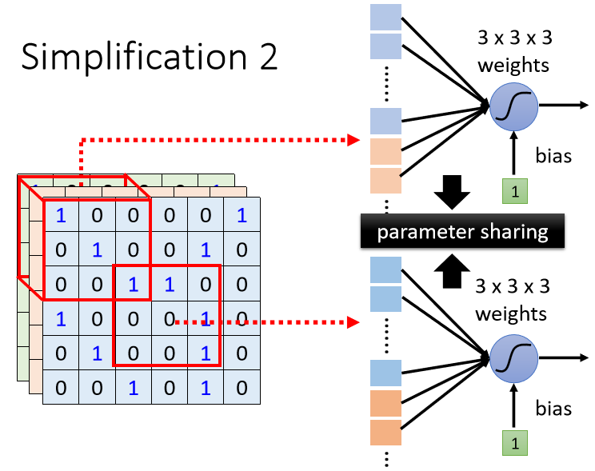
每一个 Receptive Field,它都有一组 Neuron，不同的Receptive Field 的neuron之间共享参数
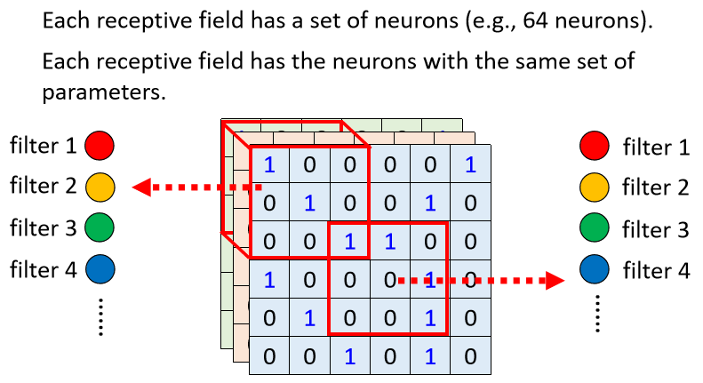
Benifit of Convolutional Layer
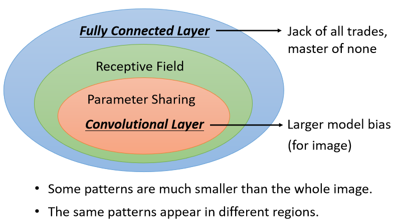
卷积
Filter的做法就是,先把 Filter 放在图片的左上角,然后把 Filter 裡面所有的值,跟左上角这个范围内的 9 个值做相乘

Filter 每次移动的距离叫做 Stride，如果我们有 64 个 Filter,我们就得到 64 组的数字,叫做 Feature Map，可以看成是,另外一张新的图片，只是这个图片的 Channel 有 64 个。
虽然例子 Filter 只有 3 × 3,但它在图像上考虑的范围是比较大的 是 5 × 5, 所以 Network 越深,同样是 3 × 3 的大小的 Filter, 它看的范围就会越来越大, 所以 Network 够深就可以侦测到比较大的 Pattern
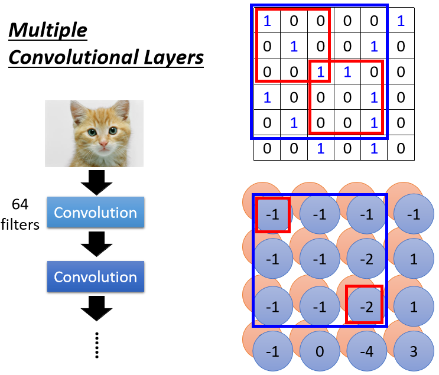
Pooling
图像的放缩不影响对图像中对象的识别
Pooling 本身没有参数,所以它不是一个 Layer, 没有 Weight, 没有要 Learn 的东西, 所以 Pooling 比较像是一个 Activation Function,比较像是 Sigmoid ， ReLU ,它就是一个 Operator, 它的行為都是固定好的,没有要根据 Data 学任何东西。
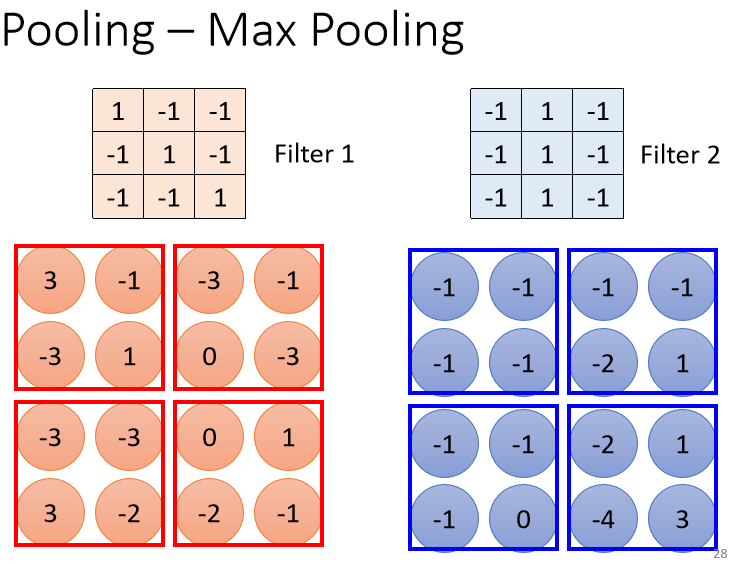
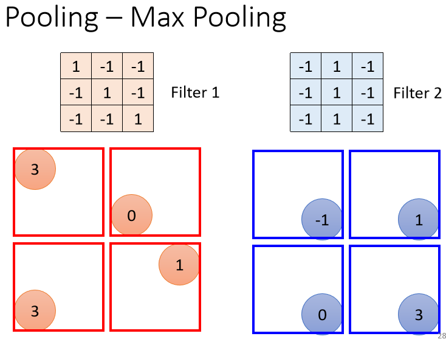
不过 Pooling, 对于你的 Performance, 还是可能会带来一点伤害的,因為假设要侦测的是非常微细的东西, 那你随便做 Subsampling,Performance 可能会稍微差一点
所以近年来, 很多影像电视的 Network 的设计,往往也开始丢弃 Pooling ,他会做 Full Convolution 的 Neural Network, 整个 Network 统统都是 Convolution，例如 AlphaGo
Whole CNN
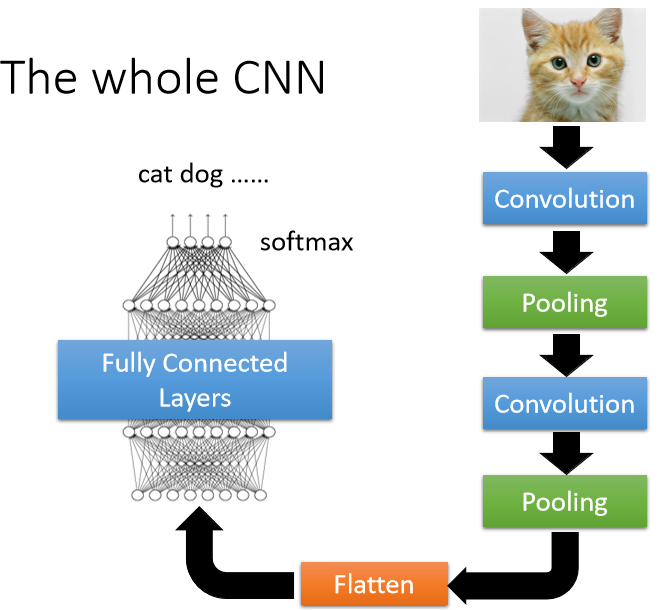